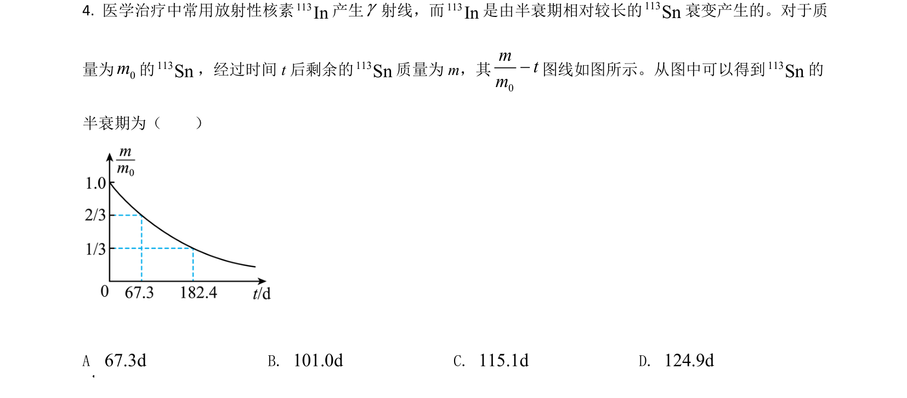
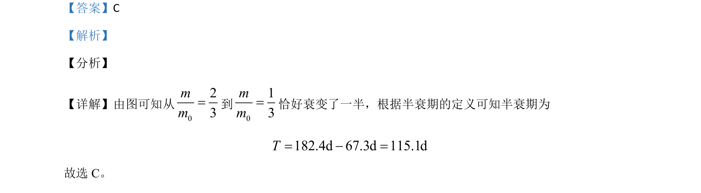

考点：半衰期 数据处理
半衰期
数据处理

该题通过图像信息考查半衰期的概念及简单计算。

📄 原 PDF 第 4 页：素材/真题/吉林/2008-2024·（吉林）物理高考真题/2021年高考物理试卷（全国乙卷）（解析卷）.pdf
素材/真题/吉林/2008-2024·（吉林）物理高考真题/2021年高考物理试卷（全国乙卷）（解析卷）.pdf
【答案】C 【解析】 【分析】 【详解】由图可知从 023mm=到 013mm=恰好衰变了一半，根据半衰期的定义可知半衰期为 182.4d 67.3d 115.1dT= - = 故选 C。